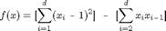
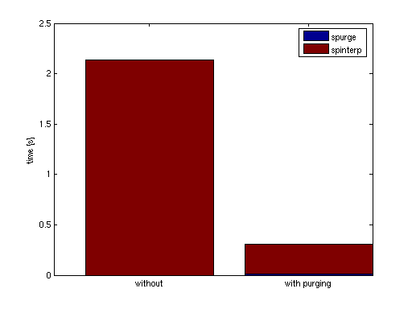

sppurge
Purge sparse grid data.Syntax
Z = sppurge(Z)Z = sppurge(Z,OPTIONS)Description
Z = sppurge(Z) Marks indices that have corresponding hierarchical surplus values larger than the default drop tolerance [0, 100*eps]. The sppurge function returns the same sparse grid interpolant data Z, but enhanced by a field purgeData that is used by spinterp to only consider the marked indices in the interpolation process, thus saving computing time.
Z = sppurge(Z,OPTIONS) The parameter OPTIONS must be an options structure generated with spset. Only the value of the DropTol property is used, which enables the user to set any absolute and relative drop tolerance to be used by the purging algorithm.
Examples
We consider the quadratic test function:

Implemented in Matlab by the following code:
type('trid.m')
function y = trid(x) % TRID Quadratic function with a tridiagonal Hessian. % Y = TRID(X) returns the function value Y for a D- % dimenional input vector X. % % The test function is due to Arnold Neumaier, listed % on the global optimization Web page at % http://www.mat.univie.ac.at/~neum/glopt/ d = length(x); y = sum((x-1).^2) - sum(x(2:d).*x(1:d-1));
During the construction of the interpolant, many subgrids are encountered that do no contribute to the interpolant, i.e., they have hierarchical surpluses that are all zero (up to floating point accuracy). An adaptive algorithm cannot know these non-contributing subgrids in advance. However, using the DropTol feature, we can tell the interpolation function spinterp to neglect the subgrids that do not contribute, and thus, save a significant amount of computing time.
We consider the high-dimensional case d=100. With the dimension-adaptive algorithm, the problem structure is automatically detected, and the function is successfully recovered using just O(d^2) function evaluations. For the interpolation domain, we use [-d^2, d^2] in each dimension.
d = 100; range = repmat([-d^2 d^2],d,1); options = spset('DimensionAdaptive', 'on', ... 'DimadaptDegree', 1, ... 'FunctionArgType', 'vector', ... 'RelTol', 1e-3, ... 'MaxPoints', 40000); z = spvals('trid',d,range,options);
We now evaluate the obtained interpolant, first without, and thereafter, with the DropTol feature set to the default value
of [0, 100*eps] (absolute drop tolerance is zero, relative drop tolerance is 100*eps). We evaluate the interpolant at 100
random points, measure the time, the absolute error, and compare the timing results in a plot.
% Compute 100 randomly sampled points p = 100; rand('state', 0); x = -d^2 + 2*d^2*rand(p,d); % Compute exact function values y = zeros(p,1); for k = 1:p y(k) = trid(x(k,:)); end xcell = num2cell(x,1); tic; % Compute interpolated function values, no dropped indices ip1 = spinterp(z, xcell{:}); t1 = toc % Perform purging of interpolant data tic; z = sppurge(z); t2 = toc tic; % Compute interpolated function values % Some indices dropped according to drop tolerance ip2 = spinterp(z, xcell{:}); t3 = toc % Compute relative errors err_ndt = max(abs(y-ip1))/(z.fevalRange(2)-z.fevalRange(1)) err_wdt = max(abs(y-ip2))/(z.fevalRange(2)-z.fevalRange(1))
t1 =
2.1393
t2 =
0.0128
t3 =
0.2933
err_ndt =
0.0061
err_wdt =
0.0061
The result is quite impressing: Without loosing accuracy (which is no surprise considering the very low drop tolerance of 100*eps compared to the relative error tolerance 1e-3), for the 100 sampled points, a speedup by a factor of about 7 is achieved (including the cost of the sppurge function).
bar([NaN t1; t2 t3],'stacked'); legend('spurge', 'spinterp'); set(gca,'XTickLabel',{'without','with purging'}); ylabel('time [s]');
See Also
spset.